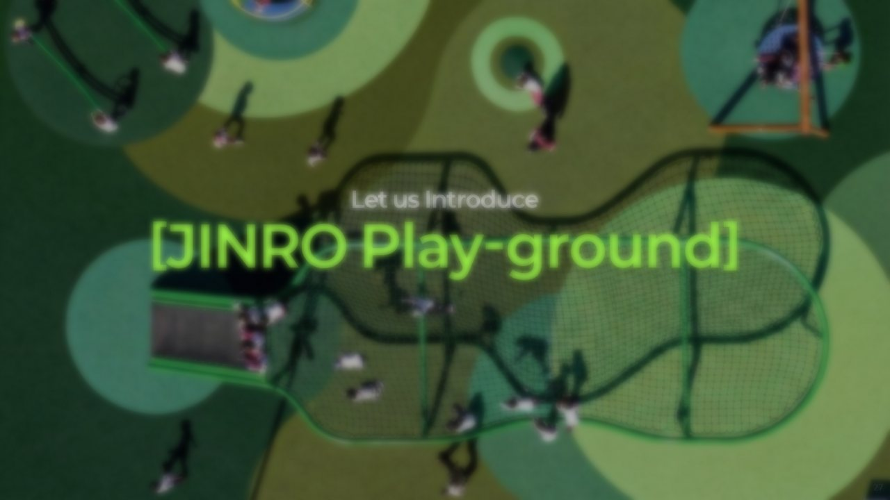
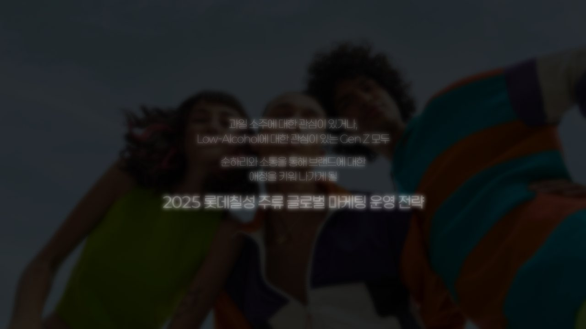
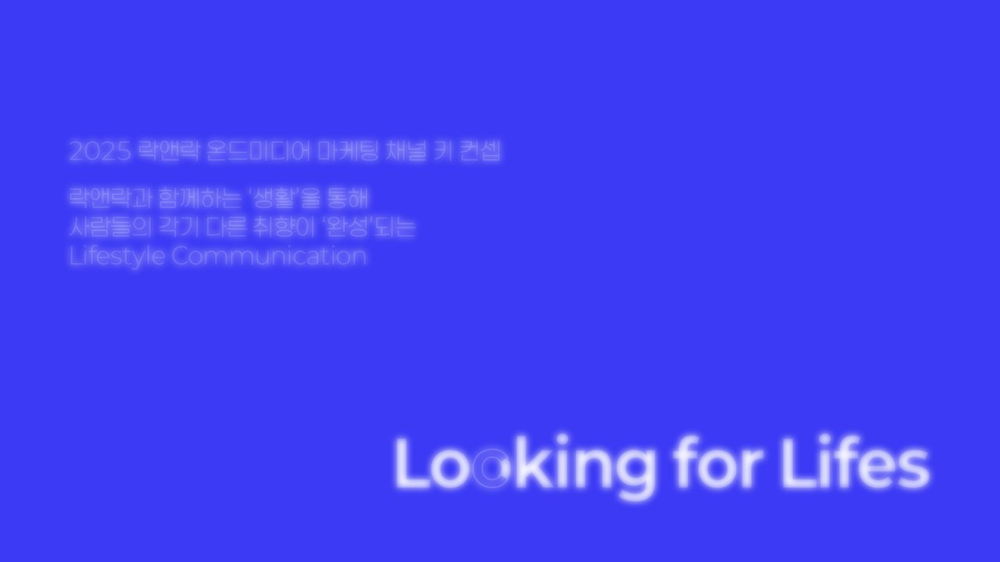
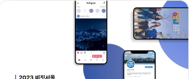
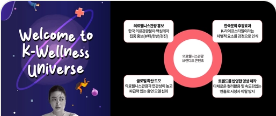
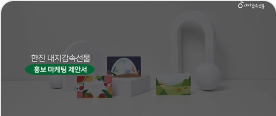
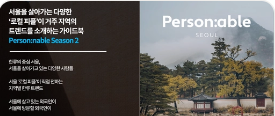
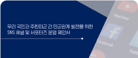

Philosophy
좋은 철학은 소통과 선한 영향력을 이끄는 창구가 됩니다.
현대의 우리는 서로가 가진 ‘철학’을 공유하고 공감을 나누는 시대 속에 살아가고 있습니다. 뚜렷하고 명확한 철학을 가진, ‘닮아가고 싶은’ 사람 혹은 브랜드에 열광하고 지지를 보내며, 이들과 소통하는 데 거리낌이 없습니다. 좋은 철학은 소통과 선한 영향력을 이끄는 창구가 됩니다.
저는 좋은 철학을 가지고 싶지만, 현생에 처한 경쟁이라는 압박감으로 이를 사유할 여유가 없는 브랜드에게 철학을 만들어 주는 기획 일을 하고 있습니다.
철학적 소양
좋은 철학을 사유하기 위해, 저는 네 가지 페르소나로 일합니다.
Strategist
브랜딩 전략가
브랜드가 처한 시장의 상황, 소비자의 행동 패턴을 분석하여 커뮤니케이션 전략을 수립합니다. 공감하기 어려운, 객관성이 결여된 기획이 아닌 시장과 소비자에 관한 정량적인 수치를 분석하고, 데이터를 근거로 한 정성 분석으로 브랜드가 공감할 수 있는 기획을 진행하고 있습니다.

진로 글로벌 디지털 마케팅 제안

롯데칠성 북미 디지털 마케팅 제안

락앤락 해외법인 온드미디어 운영 제안
한국GM 쉐보레 소셜 채널 운영 제안

2023 비짓서울 SNS 운영 활성화 제안

2023 의료웰니스 유튜브 운영 제안

한진 내지갑속선물 홍보 마케팅 제안

서울 한류관광 및 M.V.P 코스 활성화 사업 제안

한미 민군관계 개선 SNS 채널 및 서포터즈 운영 제안
Concept
컨셉 구현자
브랜드가 고객에게 닿고자 하는 컨셉을 콘텐츠와 채널 운영 전반에 일관되게 구현하며, 소비자와 만나는 접점을 만들어 갑니다. 디지털 마케팅과 소셜 미디어 채널을 운영하며 사용자의 반응과 성과 데이터를 살피고, 이를 다음 실행에 반영해 브랜드의 방향을 구체화하고 있습니다.
Creator
콘텐츠 창작자
이야기를 통해 세상과 소통하는 과정에서 즐거움을 느낍니다. 이야기를 듣고 들려주는 과정 속에 공감과 교감이 발생합니다. 이렇게 세상을 연결하는 매개체인 이야기를 만들고 있습니다. 브랜드가 들려주고 싶은 이야기를 온라인 사용자의 화법으로 만들어낸 콘텐츠를 창작하고 있습니다.
Community
커뮤니티 기획자
아프리카 마사이족의 속담 중 ‘혼자 가면 빨리 가고, 함께 가면 멀리 간다’라는 말이 있습니다. 저는 커뮤니티가 주는 ‘같이’의 ‘가치’를 믿고 있습니다. 사람과 사람이 만나 더 나은 사회를 만들기 위해 선한 영향력을 행사하는 공동체를 꿈꾸며, 함께 사유하고 나누는 활동을 기획합니다.